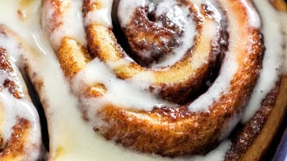

Cinnamon Rolls
Home

Description
This recipe is for creating the best and gooey-est yeast based cinnamon rolls you've ever had.
Ingredients
- Flour
- Sugar
- Brown Sugar
- Salt
- Whole Milk
- Butter
- Egg
- Cream Cheese
- Confectioner's Sugar
- Vanilla
Directions
Dough
- Mix dry ingredients(flour, sugar, salt).
- Warm the milk and butter.
- Whisk yeast into warm milk and butter until it is dissolved.
- Pour yeast mixture over dry mixture.
- Add egg and mix everything together.
- Transfer newly mixed dough to lightly floured work surface.
- Knead by hand for 3 minutes.
- Let dough rest for 10 minutes.
Filling
- Roll out the dough.
- Spread the dough with room temperature butter.
- Top the butter with brown sugar and cinnamon.
- Roll the dough up.
- Cut dough into rolls.
- Grease a 9-10inch pan and arrange rolls evenly.
- Cover and allow rolls to rise 30 minutes.
- Bake rolls at 375F for 25 minutes.
Icing
- Beat room temperature cream cheese until smooth.
- Add butter and beat until combined and smooth.
- Beat in confectioner's sugar and vanilla until smooth.
Finish the Rolls
- Remove rolls from over when golden brown.
- Allow rolls to cool.
- Spread healthy amount of icing on cinnamon rolls.
- Serve and Enjoy.